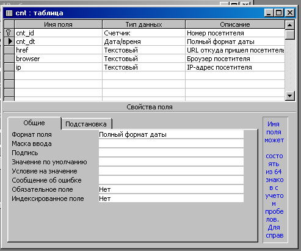
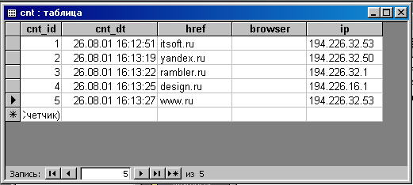
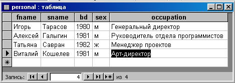
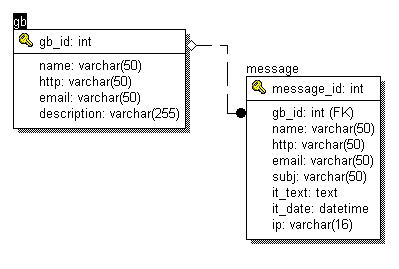

Введение
Тема баз данных применительно к сайтам в подавляющем количестве случаев не представляет особой
сложности. Большинство сайтов в Интернет не имеют базы данных и своего собственного программного
обеспечения. Для самого простейшего сайта типа "Визитная карточка" этого, как правило, и не
требуется. А если все же Заказчик захочет гостевую книгу, опросник(голосование),
список рассылки, конференцию, счетчик посетителей или другой стандартный скрипт,
то такой CGI-скрипт можно позаимствовать с другого сервера, например, с
itsoft.ru ;-), где
вы найдете все эти сервисы. Такого рода сервисы легко интегрируются в веб-сайт, и для
посетителей совсем не заметно, что CGI-программа находится на другом сервере Интернет.
Очень небольшое количество сайтов в Интернет имеет собственную базу данных. Как правило,
это интерактивные веб-сайты, которые что-то продают или предоставляют какие-либо виды услуг.
Например, среди наших разработок это http://kapitan.ru, http://www.oxygensoftware.com,
http://petek.ru/zippo/, http://test.itsoft.ru, http://gb.itsoft.ru и многие другие.
Теперь немного об архитектуре таких информационных систем.
Все эти сайты имеют три уровня доступа к базе данных, т.е. все HTML-формы можно поделить на три типа.
Первый уровень - пользовательский, предназначен для всех посетителей сайта без каких-либо ограничений.
Как правило, в большинстве случаев пользователю предоставляется возможность только читать базу данных, т.е.
CGI-скрипты выполняют инструкцию SELECT.
Второй уровень для зарегистрированных посетителей сайта, вход осуществляется по логину и паролю.
Во втором уровне доступа уже имеются ограниченные возможности редактирования и добавления данных.
И третий уровень доступа - администраторский, он самый защищенный, т.к. здесь проверяется не только
логин и пароль, но и IP-адрес, с которого произошло соединение. Иногда администраторский доступ
находится на другом доменном имени, что позволяет ограничить к нему доступ средствами
веб-сервера. Если же это доменное имя вынести на отдельный IP-адрес или на другой сервер, например,
во внутреннюю локальную сеть,
то доступ к нему можно ограничить firewoll'ом(брендмауером). Такого рода защита наиболее эффективная.
В третьем уровне администратор имеет полный доступ к базе и может не только изменять содержимое, но и
редактировать структуру базы.
Сайт kapitan.ru предоставляет турфирмам веб-интерфейс для регистрации фирмы в системе, а
также веб-интерфейс для размещения путевок. Посетители сайта могут осуществлять поиск по
базе путевок. На сайте test.itsoft.ru вы можете создать свой тест по любой тематике, ввести
в него свои вопросы, а далее разместить этот тест на любом сайте в Интернет. Посетители
вашего сайта смогут проходить тесты, а вы, как автор теста, можете добавлять, редактировать
и удалять вопросы, просматривать статистику. Все эти интерактивные веб-сайты основаны на
базах данных. Данные из HTML-формы передаются веб-серверу, веб-сервер передает их CGI-программе,
CGI-программа обрабатывает их и соединяется с СУБД. CGI-программа может вносить изменения в БД или
сделать запрос к базе, а затем полученные данные из базы передать веб-серверу.
Давайте рассмотрим подробнее вопрос: "Для чего необходимо использование базы данных
при разработке веб-сайта подобного типа?". До сих пор находится много любителей изобретать
велосипед, которые говорят: "А зачем мне база данных? Мы и сами с усами!".
Основное назначение базы данных - хранение данных, многопользовательский доступ
к ним и операции над ними.
В части III "Интерактивные веб-сайты или CGI" мы рассматривали программу чата.
В этой программе используются функции, которые пишут данные в текстовый файл на сервере.
Представьте ситуацию, когда в чат одновременно добавят сообщение два посетителя.
Сообщение одного из них не будет добавлено, т.к. файл на сервере уже открыт на запись
и заблокирован, второй процесс не сможет открыть этот файл на запись.
Вероятность такого события, конечно, мала для редкопосещаемого сайта, но она возрастает
при росте количества посетителей, поэтому такую ситуацию нельзя не учитывать.
Часто начинающие веб-разработчики вместо того, чтобы использовать
уже готовое решение на основе какой-либо СУБД, начинают писать скрипты, которые работают
с данными в файле на сервере. Я утверждаю, что оправданным является только чтение данных
из конфигурационного файла на сервере. В таком файле можно сохранять, например, цвет и шрифт
текста, которым выводится сообщение пользователям. Тем самым, ваш скрипт поддается настройкам
без модификации исходного кода. Достаточно по ftp залить новый конфигурационный файл на
сервер, и вы поменяете настройки CGI-программы. Если же вы напишите свои функции записи, удаления,
поиска, сортировки и выборки данных, которые будут работать в многопользовательском режиме, то
по сути изобретете велосипед - напишите еще одну Систему Управления Базами Данных.
В заключение данного параграфа надо сказать несколько слов о том, что представляет
собой СУБД и база данных. СУБД - это программное обеспечение, которое устанавливается
на сервер и осуществляет работу с отдельными базами данных. На одном сервере может
находится много баз данных. База данных в простейшем случае состоит из таблиц.
Таблица в реляционной БД является единицей информации.
Результатом любого запроса к БД будет таблица. Таблица может состоять из одной записи
и одной ячейки, но, тем не менее, это именно таблица, а не отдельно взятая ячейка.
Здесь и далее мы рассматриваем только реляционные СУБД. Бывают и нереляционные модели,
например, объектно-ориентированные. Для примера я сделал два снимка таблицы из MS Access.

Таблица в режиме конструктора.

Содержимое таблицы.
Таблица состоит из записей(строк, кортежей) и колонок(столбцов, атрибутов). В скобках
даны другие названия, которые вы можете встретить в публикациях по данной тематике.
Каждый столбец имеет свое уникальное в пределах таблицы имя. Двух столбцов
с одинаковыми именами в одной таблице быть не может.
Данные в одном столбце имеют один тип. Типы данных бывают следующие:
- char(n) - строка в точности из n символов, недостающие символы дополняются пробелами
- integer - целое
- date - дата
- varchar(n) - строка из меньше, чем n символов
- text - текст неопределенного размера
Здесь перечислены не все типы. Список типов может варьироваться в зависимости от
используемой СУБД. Каждый столбец может иметь свойства: уникальности, непустой, значение
по умолчанию. Уникальность означает, что в одном столбце данной таблицы не может быть
двух одинаковых ячеек. Например, такое свойство надо указывать для столбца, обозначающего
номер машины или страховки. Непустой (NOT NULL) означает, что в ячейках данного
столбца должно присутствовать какое-либо значение. Если это свойство не указано, то
в столбце могут присутствовать пустые ячейки, см. рисунок "содержимое таблицы": в столбце
browser все ячейки пустые.
Группа столбцов может образовывать первичный или внешний ключ.
В нашем случае первичный ключ образует один столбец с именем cnt_id. Первичный ключ
представляет собой набор ячеек, однозначно идентифицирующих запись, т.е. значение
любой ячейки, не входящей в первичный ключ, должно зависеть от первичного ключа.
Рассмотрим для примера таблицу сотрудников с полями: имя, фамилия, дата рождения, пол, должность.

Таблица сотрудников.
В данной таблице первичным ключом будут два столбца: фамилия и дата рождения. Значение
всех остальных столбцов однозначно определяется по этому первичному ключу. Одной фамилии
или любой другой комбинации недостаточно, т.к. в компании могут работать отец и сын или
просто однофамильцы. Первичный ключ всегда уникален, двух записей в таблице с одинаковым первичным
ключом быть не может. Это пример вымышленный, он служит просто демонстрацией того, что первичный
ключ может состоять из нескольких полей. В действительности эти два поля не являются
первичным ключом, т.к. в одной компании могут работать два близнеца. О проектировании баз данных и о выборе
первичных ключей мы детальной поговорим в 14 главе.
Внешние ключи служат для связи таблиц. Например, в системе гостевых
книг необходимо иметь две таблицы.

Таблицы информационной системы "Гостевые книги".
Первая таблица описывает гостевые книги и содержит поля:
gb_id - идентификатор книги - первичный ключ, http - URL сайта, name - имя владельца, email владельца,
описание гостевой книги, количество сообщений, выводимых на одну страницу, и
дата создания. Вторая таблица служит
для хранения сообщений и содержит поля: message_id - идентификатор сообщения - первичный ключ,
gb_id - ссылка на гостевую книгу - внешний ключ, имя автора сообщения,
email автора, тема сообщения и т.п.. На одну запись в таблице "гостевые книги"
приходится много записей в таблице сообщений, т.е. у каждой гостевой книги может быть несколько сообщений.
Такого рода связь между таблицами называется "один ко многим". Она реализуется посредством внешнего
ключа в таблице message. Для того чтобы получить все сообщения первой гостевой книги, в СУБД
делается запрос: SELECT * FROM message WHERE gb_id=1. Посмотреть эти гостевые книги вы можете
на наших сайтах http://itsoft.ru и http://perl.org.ru, а зарегистрировать свою гостевую книгу
на сайте http://gb.itsoft.ru.
|